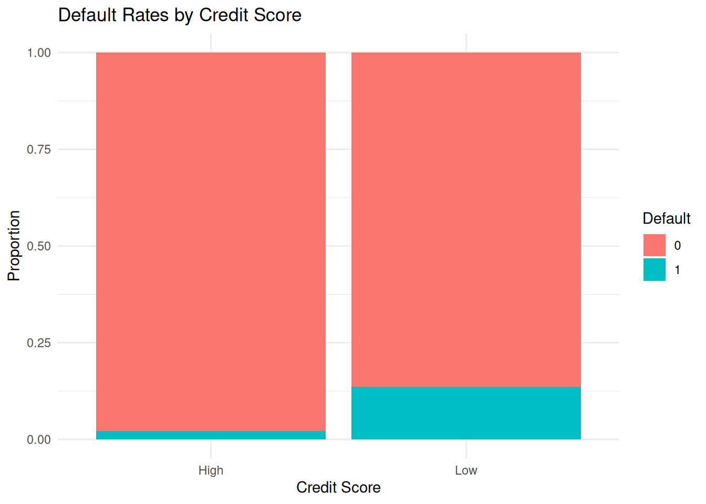

# Step 1: Define probabilities
# Base probabilities
P_Default <- 0.05
P_HighCreditScore <- 0.7
P_Default_given_HighCreditScore <- 0.02
P_Default_given_LowCreditScore <- 0.15
# Step 2: Calculate complementary probabilities
P_LowCreditScore <- 1 - P_HighCreditScore
# Step 3: Verify Total Probability Rule
P_Default_calculated <- (P_Default_given_HighCreditScore * P_HighCreditScore) +
(P_Default_given_LowCreditScore * P_LowCreditScore)
cat("Calculated P(Default):", P_Default_calculated, "\n")Calculated P(Default): 0.059 # Step 4: Simulate loan applications and outcomes
set.seed(123)
n <- 1000
credit_scores <- rbinom(n, 1, P_HighCreditScore)
defaults <- sapply(credit_scores, function(score) {
if (score == 1) {
rbinom(1, 1, P_Default_given_HighCreditScore)
} else {
rbinom(1, 1, P_Default_given_LowCreditScore)
}
})
# Step 5: Analyze results
default_rate <- mean(defaults)
cat("Simulated Default Rate:", default_rate, "\n")Simulated Default Rate: 0.055 # Step 6: Visualize results
library(ggplot2)
data <- data.frame(
CreditScore = ifelse(credit_scores == 1, "High", "Low"),
Default = defaults
)
ggplot(data, aes(x = CreditScore, fill = factor(Default))) +
geom_bar(position = "fill") +
labs(title = "Default Rates by Credit Score",
x = "Credit Score",
y = "Proportion",
fill = "Default") +
theme_minimal()
# Step 7: Sensitivity Analysis
sensitivity_analysis <- function(p_high, p_default_high, p_default_low) {
p_low <- 1 - p_high
p_default <- (p_default_high * p_high) + (p_default_low * p_low)
cat("P(Default) with P(HighCreditScore):", p_high,
"P(Default | HighCreditScore):", p_default_high,
"P(Default | LowCreditScore):", p_default_low,
"is", p_default, "\n")
}
# Example: Vary probabilities
sensitivity_analysis(0.8, 0.01, 0.2)P(Default) with P(HighCreditScore): 0.8 P(Default | HighCreditScore): 0.01 P(Default | LowCreditScore): 0.2 is 0.048 sensitivity_analysis(0.6, 0.03, 0.1)P(Default) with P(HighCreditScore): 0.6 P(Default | HighCreditScore): 0.03 P(Default | LowCreditScore): 0.1 is 0.058 # Step 8: Compare with Real-World Data
# Hypothetical real-world data
real_world_defaults <- c(rep(1, 40), rep(0, 960)) # 4% default rate
real_world_rate <- mean(real_world_defaults)
cat("Real-World Default Rate:", real_world_rate, "\n")Real-World Default Rate: 0.04 # Compare simulated and real-world rates
cat("Difference between simulated and real-world default rates:",
abs(default_rate - real_world_rate), "\n")Difference between simulated and real-world default rates: 0.015 # Step 9: What-If Scenarios
# Scenario: Economic downturn increases default probabilities
P_Default_given_HighCreditScore_downturn <- 0.05
P_Default_given_LowCreditScore_downturn <- 0.25
defaults_downturn <- sapply(credit_scores, function(score) {
if (score == 1) {
rbinom(1, 1, P_Default_given_HighCreditScore_downturn)
} else {
rbinom(1, 1, P_Default_given_LowCreditScore_downturn)
}
})
default_rate_downturn <- mean(defaults_downturn)
cat("Simulated Default Rate during Economic Downturn:", default_rate_downturn, "\n")Simulated Default Rate during Economic Downturn: 0.109
Comments MS:
Comments on the Submission
rbinom()and the appropriate conditional logic for simulations demonstrates a solid understanding of R’s functionality and the underlying statistical concepts. Note that in my “worked” solution I avoided this obvious approach only because I could not universally assume knoweldge of the binomial distribution and its handling in R.This submission is excellent in its computational approach and has great potential to become even more impressive with enhanced narrative and visual elements. Keep up the great work!